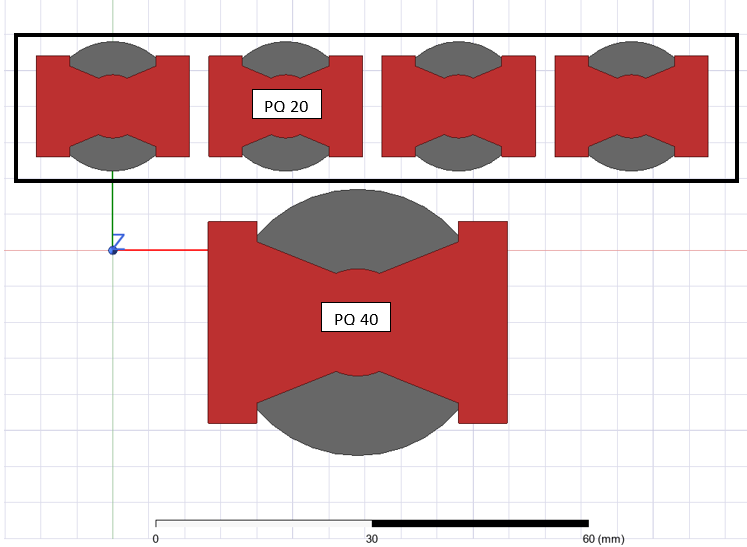

Magnetic Optimization of Reconfigurable PSFB Converter
Master's Thesis Project (2023 - 2025)
Electrified railway systems demand compact and efficient power supplies. This thesis addresses this need by optimizing the magnetic components of a reconfigurable Phase Shift Full Bridge (PSFB) converter. While current designs often use multiple transformer cores for varying input voltages, my work introduces a single transformer core with multiple windings, significantly reducing the system's footprint and cost.
The design process emphasizes accurate AC resistance estimation for a range of EE transformer cores, and a filter inductor is also designed to support Zero Voltage Switching (ZVS). Despite time constraints for full system testing, the fabricated transformer and inductor were successfully validated, demonstrating the viability and benefits of this innovative single-core approach.
Optimized Power Conversion for Electrified Railways
This work focuses on optimizing the onboard power supply systems in electrified railways, specifically targeting the reconfigurable Phase Shift Full Bridge (PSFB) converter. This critical component ensures efficient power delivery for various train systems, from propulsion to passenger comfort.
The Challenge of Multiple Transformers
Current PSFB converter implementations often rely on multiple transformer cores[1] to manage the wide input voltage ranges encountered in railway applications. While offering some modularity, this approach presents significant drawbacks:
Increased Footprint: As shown in Table 1.1, using multiple smaller cores (e.g., four PQ20s) demands a substantially larger Printed Circuit Board (PCB) area compared to a single larger core (e.g., one PQ40). This leads to longer trace lengths, increased conduction losses, and higher electromagnetic interference (EMI).
Higher Cost: The need for multiple cores, bobbins, and winding leads directly translates to increased system cost, as demonstrated in Table 1.1, where the PQ20 system is 10% more expensive than the PQ40.
Thermal Management Issues: Minor mismatches in leakage inductance between identical cores can lead to current imbalances, increasing the risk of localized hotspots and thermal runaway. This necessitates complex and costly heat sinking solutions.
Reduced Power Density: A larger footprint for the same power output results in lower power density, a significant disadvantage in space-constrained railway environments.
Table 1.1: Cost and footprint comparison
Core Type
Core Cost (USD)
Coil Former Cost (USD)
Footprint Area (mm²)
PQ20 (x4)
3.487
7.656
2064.5
PQ40 (x1)
2.898
7.239
1354.836
Our Innovative Single-Core Solution
To address these limitations, my research proposes a novel single multi-winding transformer core solution. This approach consolidates the magnetic component, significantly reducing size, cost, and complexity, as visualized below.

Figure 1.1: Four PQ20 cores vs. a single PQ40 core.
Scope and Specifications
The system is designed for series connection of primary windings at higher input voltages (by turning off a specific branch) and parallel connection at lower input voltages (by activating a switching branch). This reconfigurable mode ensures a steady duty cycle across a wide input range.
EE cores were specifically chosen for this design due to their uniform exterior legs, allowing for the strategic winding of "T1" and "T2" transformer sections on a single EE core.
The investigation focuses on a specific range of ferrite cores, including EE10/11, EE13, EE16, EE19, EE25/19, EE30, EE40, EE50, EE60, ETD39, EE35, EE42, EE55 from TDK.
The control aspects of the converter are not investigated in this thesis; experiments will be conducted in open-loop operation.
Filter inductors are designed separately using a parametric approach (varying core size, turns, and air gap) to optimize system magnetics and support lossless switching (ZVS).
M. Abu Bakar, M. Farhan Alam, Abdul Majid, and Kent Bertilsson. Dual-mode stable performance phase-shifted full-bridge converter for wide-input and medium-power applications. IEEE Transactions on Power Electronics, 36(6):6375–6388, 2021.